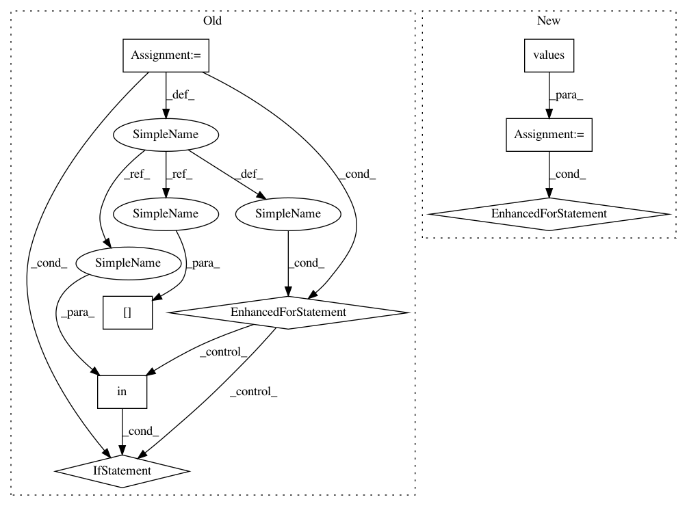

bf9599809214cbc3082eb7f39c0ad3155822a2c5,src/python/twitter/pants/tasks/jvm_compile/scala/zinc_analysis.py,ZincAnalysis,split,#ZincAnalysis#Any#Any#,172
Before Change
internal_api_splits = []
external_api_splits = []
for naive_internal_apis, external_apis, split in \
zip(naive_internal_api_splits, naive_external_api_splits, splits):
internal_apis = defaultdict(list)
for k, vs in naive_internal_apis.iteritems():
if k in split:
internal_apis[k] = vs // Remains internal.
else:
external_apis[representatives[k]] = vs // Externalized.
internal_api_splits.append(internal_apis)
external_api_splits.append(external_apis)
apis_splits = []
for args in zip(internal_api_splits, external_api_splits):
apis_splits.append(APIs(args))
After Change
// All externalized deps require a copy of the relevant api.
for external, external_api in zip(external_splits, external_api_splits):
for vs in external.values():
for v in vs:
if v in representative_to_internal_api:
external_api[v] = representative_to_internal_api[v]
apis_splits = []
for args in zip(internal_api_splits, external_api_splits):
apis_splits.append(APIs(args))
In pattern: SUPERPATTERN
Frequency: 3
Non-data size: 8
Instances
Project Name: pantsbuild/pants
Commit Name: bf9599809214cbc3082eb7f39c0ad3155822a2c5
Time: 2014-02-12
Author: benjy@foursquare.com
File Name: src/python/twitter/pants/tasks/jvm_compile/scala/zinc_analysis.py
Class Name: ZincAnalysis
Method Name: split
Project Name: senarvi/theanolm
Commit Name: 360ed9d9b6a8f25e8ec1302b523ca3dcc97c6f02
Time: 2016-12-06
Author: seppo.git@marjaniemi.com
File Name: theanolm/network/network.py
Class Name: Network
Method Name: get_state
Project Name: pantsbuild/pants
Commit Name: bf9599809214cbc3082eb7f39c0ad3155822a2c5
Time: 2014-02-12
Author: benjy@foursquare.com
File Name: src/python/twitter/pants/tasks/jvm_compile/scala/zinc_analysis.py
Class Name: ZincAnalysis
Method Name: split
Project Name: senarvi/theanolm
Commit Name: 360ed9d9b6a8f25e8ec1302b523ca3dcc97c6f02
Time: 2016-12-06
Author: seppo.git@marjaniemi.com
File Name: theanolm/network/network.py
Class Name: Network
Method Name: set_state